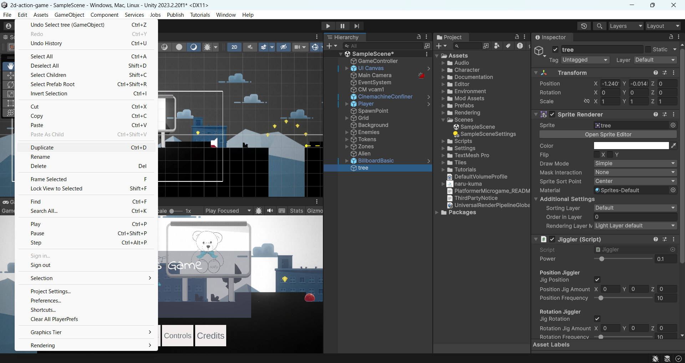
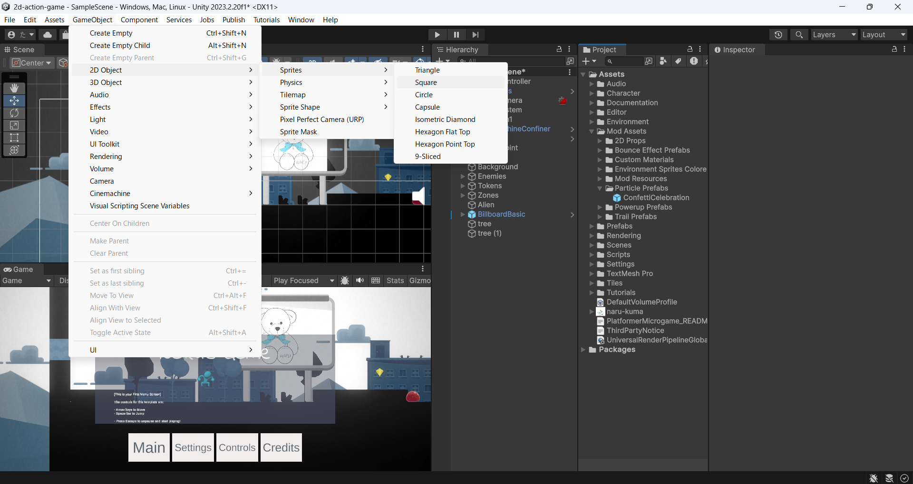
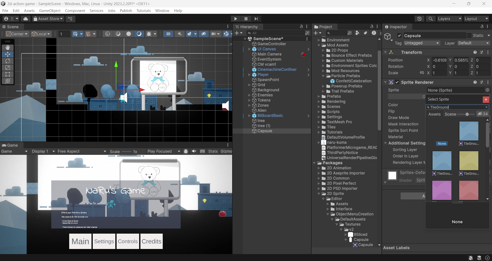
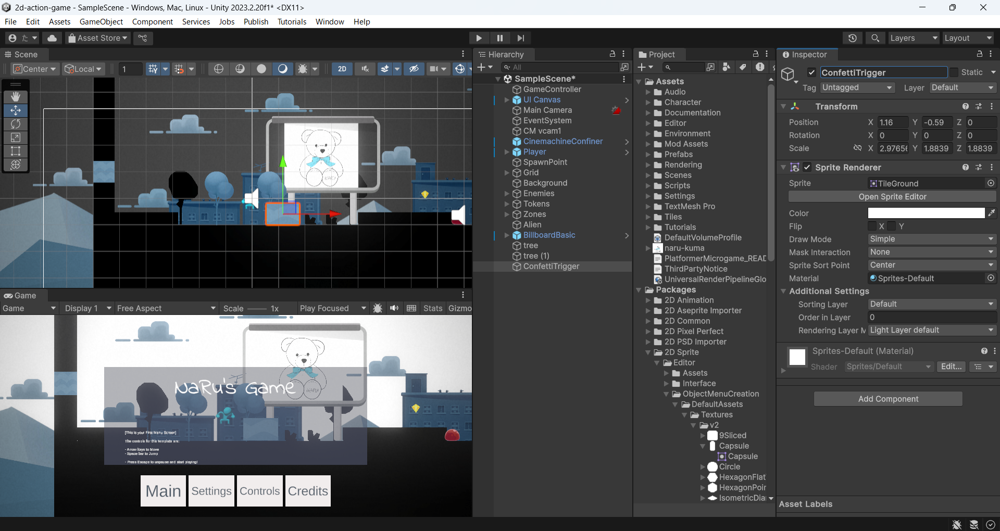
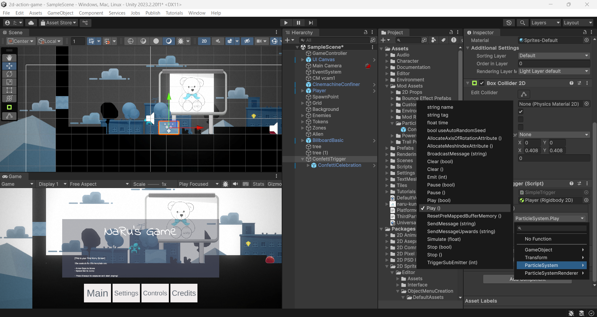

世界に命を吹き込もう 〜揺れる木と紙吹雪のしかけ〜
🎯 この章でできるようになること
- Add Componentで、用意されているスクリプトをオブジェクトに「部品」として付けられる
- Treeを置いてJigglerスクリプトで揺らし、世界に動きを足せる
- Trigger（トリガー）が「見えないセンサー」であることを説明できる
- SimpleTriggerとパーティクルを組み合わせて、「プレイヤーが通ると紙吹雪が舞う」しかけを作れる
※ 前回までに使ったプロジェクト（2d-action-game）をUnity Hubから開いてから始めよう。
色を変えたりトレイルを付けたりした、自分のPlatformer Microgameの続きから作っていくよ。
4-1. 今回つくるもの
前回までで、ゲームの世界は自分好みの「色」になりました。
でも今の世界は、プレイヤー以外なにも動かない、ちょっと静かな世界です。
今回はここに「動き」と「しかけ」を足して、世界に命を吹き込みます。
やることは大きく2つ。
① 風に揺れる木（Tree）を植える
② プレイヤーが特定の場所を通ると紙吹雪が舞う「見えないしかけ」を作る
完成するとこうなります。
今回の主役は、Platformer Microgameにあらかじめ入っているできあいのスクリプトたち。
自分でコードをたくさん書くのではなく、用意された部品を選んで、取り付けて、設定するのが今日のテーマだよ。
4-2. スクリプトは「あと付けできる部品」
Unityでは、ゲームオブジェクトにコンポーネントという部品を付け足すことで、機能を増やしていきます。
見た目を表示するSprite Rendererも、当たり判定のColliderも、ぜんぶコンポーネント。
そしてスクリプト（プログラム）もコンポーネントの一種です。
インスペクターの「Add Component」ボタンから名前で検索して付けるだけで、
そのオブジェクトに新しい「ふるまい」が加わります。
Platformer Microgameには、改造用のスクリプトがはじめから何個も入っています。
今日はその中から2つを使います。
| スクリプト名 | 付けるとどうなる？ |
|---|---|
Jiggler（ジグラー） | オブジェクトがぷるぷる・ゆらゆら揺れる。 木や草を「風に揺れている」ように見せられる |
SimpleTrigger（シンプルトリガー） | 決めた相手がその場所に入ってきた瞬間に、登録しておいた処理を実行する。 「見えないセンサー」を作れる |
ゲームオブジェクトはからっぽの入れ物で、コンポーネントを付け足すことで機能が増えていく。
インスペクターに縦に並んでいる1つ1つが、それぞれコンポーネントだよ。
4-3. 揺れる木を植えよう
まずは木を1本植えて、Jigglerで揺らしてみよう。
プロジェクトウィンドウで Environment → Sprites の順に開き、「tree」のスプライトを探そう。
見つけたら、シーンビューの好きな場所にドラッグ＆ドロップ。
置いたtreeを選んだ状態で、インスペクターの「Add Component」をクリックし、「Jiggler」と入力。
出てきた Jiggler をクリックして追加しよう。
追加できたら再生（Play）ボタンを押してみて。木が小さくぷるぷる揺れていたら成功！
Jigglerは、はじめの設定では「大きさ（スケール）を少しだけ揺らす」動きをするよ。
確認できたら、再生をもう一度押して必ず停止しておこう。
4-4. 木をカスタマイズしよう
木が1本だけだとさびしいので、増やして、動きも変えてみよう。
ヒエラルキーで tree を選んだまま、メニューバーの Edit → Duplicate を選ぶか、
ショートカット Ctrl + D⌘ + D を押そう。
同じ木がもう1本できるよ。

複製した直後は同じ場所に重なっているので、ツールバーのMove（移動）ツールを選び、 矢印をドラッグして木を別の場所に動かそう。
木を1本選んで、インスペクターのJigglerにある Rotation Jig Amount の Z に 100 と入力してみよう。
再生すると、その木は大きさではなく前後にぐらんぐらん回転するようになるよ。
数値をいろいろ変えて、「そよ風の木」「大嵐の木」など、木ごとに揺れ方の個性をつけてみよう。
4-5. トリガー 〜見えないセンサー〜
次は「プレイヤーがある場所を通ると紙吹雪が舞う」しかけです。
ここで大活躍するのがTrigger（トリガー）という仕組み。
トリガーは、コンビニの自動ドアのセンサーにそっくりです。
センサーそのものは目に見えないし、さわった感覚もないけれど、
人が範囲に入った瞬間を検知して、「ドアを開ける」という処理を実行しますよね。
ゲームの中でも同じで、見えない範囲を置いておいて、プレイヤーが入ってきた瞬間に
「紙吹雪を出す」「音を鳴らす」などの処理を実行できるのです。
見えない範囲に「入った瞬間」を検知して、決めておいた処理を実行する
トリガーの正体は、当たり判定（Collider）の設定の1つです。
Colliderの Is Trigger にチェックを入れると、
「ぶつかって止まる壁」だったものが「すり抜けられるセンサー」に変わります。
チェックなし＝物理的にぶつかる（地面や壁）。
チェックあり＝すり抜けられるが、「入ってきたこと」は検知できる（センサー）。
これから作るしかけの全体像はこうなります。作業に入る前に、ゴールの形を頭に入れておこう。
センサー役のConfettiTriggerに部品を付けて、子どもに紙吹雪を持たせる
4-6. トリガー用オブジェクトを置こう
まずはセンサーの「本体」になる四角いオブジェクトを作ります。
メニューバーで GameObject → 2D Object → Sprite → Square の順に選ぼう。
シーンに白い四角ができる。これがトリガーの本体になるよ。

作ったSquareのインスペクターで、Sprite Renderer の Sprite 欄（None (Sprite) と表示されている場所）の
隣にある丸いボタン（◎）をクリック。
検索欄に「TileGround」と入力して、出てきたものをダブルクリックしよう。
作業中に場所がわかりやすいよう、いったん地面タイルの見た目にしておくんだ（最後に見えなくするよ）。

MoveツールとScale（拡大縮小）ツールを使って、
プレイヤーが歩いて通るコースの一部をおおうように、位置と大きさを調整しよう。
「ここを通ったら発動」という場所を自分で決めてね。
4-7. 名前を付けて、コライダーでセンサー化しよう
ヒエラルキーでSquareを選び、名前を ConfettiTrigger（コンフェッティ・トリガー＝紙吹雪トリガー）に変更しよう。
オブジェクトが増えてきたら、役割がわかる名前を付けるのが迷子にならないコツだよ。

インスペクターの「Add Component」をクリックし、「Box Collider 2D」を検索して追加。
追加できたら、Box Collider 2Dの中にある Is Trigger のボックスにチェックを入れる。
これで「ぶつかる四角」ではなく「すり抜けられるセンサー」になった！
4-8. SimpleTriggerで「誰に反応するか」を決めよう
ConfettiTriggerを選んだまま「Add Component」→「Simple Trigger」を検索して追加しよう。
ヒエラルキーの Player を、インスペクターのSimple Triggerにある TriggerBody 欄にドラッグ＆ドロップ。
これで「Playerが入ってきたときだけ反応するセンサー」になるよ。
木や敵が触れても発動しないのは、この設定のおかげ。
4-9. 紙吹雪パーティクルを仕込もう
センサーはできたけど、まだ「検知したら何をするか」が空っぽです。
発動させる紙吹雪のパーティクルを用意して、センサーとつなぎます。
小さな粒をたくさん飛ばして、紙吹雪・煙・火花・キラキラなどの演出を作る仕組み。
Unityでは
ParticleSystemというコンポーネントが担当していて、Playで再生できる。
プロジェクトウィンドウで Mod Assets → Particle Prefabs の順に開き、
ConfettiCelebration（紙吹雪のお祝い）を見つけよう。
それを、ヒエラルキーの ConfettiTrigger の上に重ねるようにドラッグ＆ドロップ。
ConfettiTriggerの子どもになって、トリガーの中央に自動で配置されるよ。
ヒエラルキーで ConfettiTrigger をクリックし、Simple Triggerコンポーネントの On Trigger Enter () の下にある
「＋」をクリック。
次に、ヒエラルキー（プロジェクトウィンドウではないよ！）から ConfettiCelebration を
None (Object) の欄にドラッグしよう。
最後に「No Function」と書かれたドロップダウンをクリックして、ParticleSystem → Play () の順に選べば設定完了！

これで「Playerが入った瞬間 → ConfettiCelebrationのParticleSystemをPlayする」というつながりができたよ。
図4-2の全体像、そのままだね。
4-10. 仕上げ 〜センサーを見えなくして動作確認〜
センサーの四角が見えたままだと、ステージに変なタイルが浮かんでいるように見えてしまう。
ConfettiTriggerのインスペクターで、Sprite Rendererコンポーネントの左にあるチェックボックスを外そう。
これで見た目だけがオフになり、センサーの機能はそのまま残るよ。
再生（Play）を押して、プレイヤーをしかけの場所まで走らせよう。
通った瞬間に紙吹雪が舞い上がったら大成功！🎉
4-11. C#コーナー 〜SimpleTriggerの中をのぞいてみよう〜
今日はコードを1行も書かずに、しかけが完成しました。
でも、SimpleTriggerの中では何が起きているんだろう？
中身のイメージを、うんと短くするとこんな形です（読むだけでOK。書き写す必要はないよ）。
public class SimpleTrigger : MonoBehaviour
{
public Collider2D triggerBody; // 誰に反応するか（＝Inspectorの TriggerBody 欄）
public UnityEvent onTriggerEnter; // 入った瞬間にやること（＝On Trigger Enter () の一覧）
// 何かがこのTriggerに入ってきた瞬間、Unityが自動で呼ぶ
void OnTriggerEnter2D(Collider2D other)
{
if (other == triggerBody) // 入ってきたのが登録した相手（Player）なら…
{
onTriggerEnter.Invoke(); // 登録しておいた処理を実行！
}
}
}publicを付けると、インスペクターに入力欄として表示される。PlayerをTriggerBody欄にドラッグしたのは、実は「
triggerBodyという変数に値を入れる」操作だったんだ。
自分で呼び出すコードを書かなくても、「入った瞬間」に勝手に実行される。
インスペクターの＋ボタンで処理を追加できるのが特徴で、ParticleSystemのPlayを登録したのがまさにこれ。
コードを書き換えずに「何をするか」を差し替えられる、Unityらしい便利な仕組みだよ。
つまり今日の作業は、「プログラムを書く」代わりに、
できあがったプログラムの設定欄（public変数とUnityEvent）をインスペクターから埋めることだったんだね。
プロのゲーム開発でも、プログラマーが作った部品をレベルデザイナーがこうやって配置・設定していくよ。
4-12. 💪 やってみよう
課題1: 秘密の場所に紙吹雪トリガーを仕掛けよう
ステージのすみっこ、高いジャンプでしか届かない足場、行き止まりの奥……
「よくぞここまで来たな！」という秘密の場所を1つ決めて、そこにも紙吹雪トリガーを仕掛けてみよう。
ヒントを見る
できあがったConfettiTriggerを選んで Ctrl + D⌘ + D で複製すれば、
コライダーもSimpleTriggerの設定も、子どもの紙吹雪も丸ごとコピーされる。
あとはMoveツールで秘密の場所へ動かすだけでOK。
課題2: 揺れる森を作ろう
木を5本以上に増やして、1本1本の大きさ・位置・揺れ方を変えてみよう。
奥ゆかしくそよぐ木、ぶんぶん暴れる木……揺れの個性で森の雰囲気が変わるよ。
ヒントを見る
JigglerのRotation Jig AmountのZを、10・50・200など極端に変えて見比べてみよう。
Scaleツールで木の大きさを変えると、遠近感のある森になるよ。
課題3（チャレンジ）: 別のパーティクルでしかけを作ろう
Mod Assets → Particle Prefabs の中には、紙吹雪以外のパーティクルも入っている。
好きなものを選んで、「通ると発動する新しいしかけ」をもう1つ作ってみよう。
ヒントを見る
作り方の流れはまったく同じ。
①Squareでトリガー用オブジェクトを作る → ②Box Collider 2D＋Is Trigger → ③SimpleTriggerでTriggerBodyにPlayer →
④パーティクルを子どもにして、On Trigger Enter ()にParticleSystem → Play ()を登録、だよ。
図4-2を見ながら進めよう。
4-13. 🚨 つまずきポイント集
トリガーを通っても紙吹雪が出ない
原因: ①TriggerBodyにPlayerが入っていない ②On Trigger Enter ()の欄がNone (Object)やNo Functionのまま ③Is Triggerのチェック忘れ、のどれかが多い。
直し方: ConfettiTriggerのインスペクターを上から順に見直そう。
Simple Triggerの各欄が「TriggerBody＝Player」「ConfettiCelebration＋ParticleSystem.Play」になっているか1つずつ確認。
On Trigger Enter ()にConfettiCelebrationをドラッグできない・登録しても動かない
原因: プロジェクトウィンドウのプレハブをドラッグしている。
登録するのは、シーンに置いた（＝ヒエラルキーにある）ConfettiCelebrationじゃないとダメ。
直し方: ヒエラルキーのConfettiTriggerの子になっているConfettiCelebrationを、None (Object)欄へドラッグし直そう。
プレイヤーがトリガーの四角にぶつかって進めない
原因: Box Collider 2DのIs Triggerにチェックが入っていないので、センサーではなく「壁」になっている。
直し方: ConfettiTriggerのBox Collider 2Dを開いて、Is Triggerにチェックを入れよう。
センサーを見えなくしたら、しかけごと動かなくなった
原因: Sprite Rendererのチェックではなく、インスペクター一番上の名前の左にあるチェック（オブジェクト全体のオン/オフ）を外してしまった。
これを外すとオブジェクトが丸ごと無効になり、センサーも止まってしまう。
直し方: 名前の左のチェックはオンに戻して、Sprite Rendererコンポーネントの左のチェックだけを外そう。
木が揺れない
原因: Jigglerが付いていない（別の木に付けていた）、または再生していない。
Jigglerの揺れは再生中にしか動かないよ。
直し方: 揺らしたい木を選んでインスペクターにJigglerがあるか確認 → 再生ボタンを押して確認しよう。
再生中に調整した位置や設定が、停止したら元に戻ってしまった
原因: 再生中（Playモード中）の変更は、停止するとすべて捨てられるのがUnityのルール。
直し方: 調整は必ず停止してから行おう。
再生中は画面の色が少し変わるので、「今どっちのモードか」をいつも気にするクセをつけよう。
💡 15分たっても直らないときは、次の「AIを味方につけよう」の方法で相談してみよう。
4-14. 🤖 AIを味方につけよう
今回のしかけは「コライダー・スクリプト・パーティクル」の3つの部品の連係プレー。
どこか1か所の設定ミスで動かなくなるので、今の設定を正確に伝えて確認ポイントを聞くのがコツだよ。
この章でのAIの使い所
✅ 良い使い方 — 自分で15分考えてわからなかったら聞く
- しかけが動かないとき: 「Is Triggerはチェック済み」「TriggerBodyにはPlayerを入れた」など、やったことを箇条書きで伝えて、確認すべき順番を聞く
- 概念の理解: トリガーやパーティクルなど、初めての言葉を身近な例にたとえて説明してもらう
そのままコピペで使えるプロンプト（AIへの指示文）の例:
SquareオブジェクトにBox Collider 2D（Is Triggerチェック済み）とSimpleTriggerを付けて、TriggerBodyにPlayerを設定し、On Trigger Enter ()に子のパーティクルのParticleSystem.Playを登録しました。
でもプレイヤーが通ってもパーティクルが出ません。確認すべきポイントを順番に教えてください。
🚫 やめておこう
- 課題の「しかけをどこに置くか」までAIに決めてもらう（世界のデザインは自分の仕事！）
- AIの答えを動かして確かめずに信じる（AIは違うバージョンのUnityの話をすることもある。
必ず自分の画面で確認）
4-15. ✅ チェックリスト
全部チェックできたら第4章クリア！
🎉 世界が動いて、しかけまで反応するようになった。次回はステージそのものを自分の手で作りかえていくよ。
4-16. 📚 もっと知りたい人へ
- コライダーの概要（Unity 公式マニュアル・日本語） — 当たり判定とトリガーの仕組みをもっとくわしく
- パーティクルシステム（Unity 公式マニュアル・日本語） — 紙吹雪以外の演出もぜんぶこの仕組み
- Unity Learn — Unity公式の学習サイト。
日本語のコースもあるよ